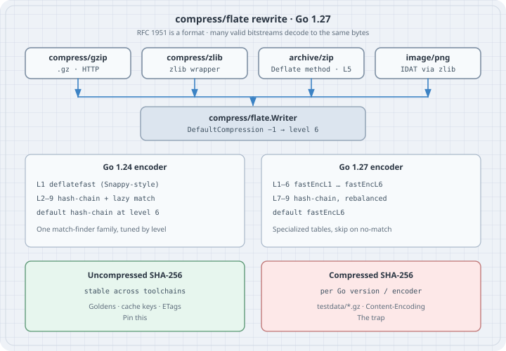

Go 1.27 compress/flate Rewrite
Go 1.27 compress/flate Rewrite
Go 1.27 rewrote the DEFLATE encoder in compress/flate. Compression speed goes up for the common levels, and the exact encoded bytes change. compress/gzip, compress/zlib, archive/zip, and image/png all sit on that encoder, so their output changes too. The Go 1.27 release notes say so in one paragraph. The foundations tour repeats it as a table cell. This chapter measures it.
The format is still RFC 1951. Every gzip file we produced on Go 1.24.4 gunzips on Go 1.27.2, and the reverse. The decompressed SHA-256 is identical. The compressed SHA-256 is not. That is specified behaviour: flate.NewWriter, gzip.NewWriter, zip.NewWriter, and png.Encode all document that the exact bytes written are outside the Go 1 compatibility promise.
Everything below was compiled and run on one amd64 box (Intel(R) Xeon(R) Processor, 8 CPUs) with Go 1.24.4 (/usr/bin/go) and Go 1.27.2. Treat the timings as one machine’s numbers; use -count=10 and benchstat before quoting them in a performance review. The release notes compare against Go 1.26; this box has no 1.26 toolchain, so the baseline here is 1.24.4. Neither the Go 1.25 nor the Go 1.26 release notes mention a compress/flate change.
Mental model
gzip zlib zip png
│
▼
compress/flate.Writer DEFLATE bitstream (RFC 1951)
│
▼
flate.Reader / gzip.Reader / zip / png.Decode- DEFLATE is a format. LZ77 copies plus Huffman coding. Many bitstreams decode to the same payload. A compressor is free to pick any valid encoding.
- The wrappers only frame it. gzip (RFC 1952) adds a 10-byte header, CRC-32, and ISIZE. zlib (RFC 1950) adds a 2-byte CMF/FLG header and an Adler-32. zip stores DEFLATE members (stdlib default:
flate.NewWriter(w, 5)inarchive/zip/register.go). PNG IDAT chunks go throughcompress/zlib. - DefaultCompression is still −1 → 6. Both 1.24 and 1.27 map
DefaultCompressionto level 6 incompressor.init. The algorithm at 6 changed. - Go 1.24 encoder. Level 1 (
BestSpeed) is the Snappy-style matcher indeflatefast.go. Levels 2–9 are one hash-chain compressor with per-levelgood/lazy/nice/chainknobs. - Go 1.27 encoder. Levels 1–6 are specialized match finders
fastEncL1…fastEncL6(deflatefast.go,level1.go–level6.go): bigger/sparser hash tables, 4- and 7-byte hashes, skip-ahead on long literal runs. Levels 7–9 stay on the hash-chain path with rebalanced knobs (level 9chaindrops from 4096 to 1024). Tracked as issue 75532. - Tiny payloads. On the 1.27 fast path, a flush of ≤32 bytes is written as a stored (uncompressed) DEFLATE block. A 23-byte gzip of
"desk ticket 42 is open\n"contains that ASCII in the clear. The 1.24 encoder Huffman-coded the same string.

Worked examples
Set up a module. The go line is 1.24 so both toolchains compile it; each go binary still links its own standard library.
mkdir flatebench && cd flatebench
go mod init example.com/flatebench # go 1.24 in go.mod
go versiongo version go1.24.4 linux/amd64
go version go1.27.2 linux/amd64Case 1: size, hash, and round-trip on the same inputs
Five 1 MiB payloads, generated in-process so both compilers see identical bytes: repeating HTML table rows, JSON records, Go-like source, zeros, and math/rand/v2 with a fixed PCG seed. gzip header is pinned (ModTime zero, OS 255) so a hash difference is the DEFLATE payload, not the gzip timestamp.
// compare.go — gzip/flate/zlib/zip/png size, hash, and round-trip check
package main
import (
"archive/zip"
"bytes"
"compress/flate"
"compress/gzip"
"compress/zlib"
"crypto/sha256"
"encoding/hex"
"fmt"
"hash"
"image"
"image/color"
"image/png"
"io"
"math/rand/v2"
"os"
"runtime"
"strings"
"time"
)
const payload = 1 << 20 // 1 MiB
func main() {
mode := "compare"
if len(os.Args) > 1 {
mode = os.Args[1]
}
switch mode {
case "dump-golden":
dumpGolden()
return
case "check-golden":
path := "testdata/ticket.gz"
if len(os.Args) > 2 {
path = os.Args[2]
}
checkGolden(path)
return
}
fmt.Printf("go %s %s/%s\n", runtime.Version(), runtime.GOOS, runtime.GOARCH)
fmt.Printf("compiler %s payload %d bytes\n", runtime.Compiler, payload)
inputs := []struct {
name string
data []byte
}{
{"html", makeHTML(payload)},
{"json", makeJSON(payload)},
{"src", makeSrc(payload)},
{"zeros", makeZeros(payload)},
{"rand", makeRand(payload)},
}
fmt.Println()
fmt.Println("== gzip (ModTime zero, OS 255) ==")
fmt.Printf("%-6s %5s %10s %10s %7s %-16s %-16s %s\n",
"input", "lvl", "in", "out", "ratio", "gz-sha256", "raw-sha256", "roundtrip")
for _, in := range inputs {
raw := sha256.Sum256(in.data)
rawHex := hex.EncodeToString(raw[:])[:16]
for _, lvl := range []int{gzip.BestSpeed, 6, gzip.DefaultCompression, gzip.BestCompression} {
out, err := gzipBytes(in.data, lvl)
must(err)
back, err := gunzipBytes(out)
must(err)
ok := "OK"
if !bytes.Equal(back, in.data) {
ok = "FAIL"
}
sum := sha256.Sum256(out)
ratio := float64(len(in.data)) / float64(len(out))
fmt.Printf("%-6s %5s %10d %10d %7.2f %-16s %-16s %s\n",
in.name, lvlName(lvl), len(in.data), len(out), ratio,
hex.EncodeToString(sum[:])[:16], rawHex, ok)
}
}
fmt.Println()
fmt.Println("== wrappers on html (default level) ==")
html := inputs[0].data
type row struct {
pkg string
out []byte
back []byte
}
flateOut, err := flateBytes(html, flate.DefaultCompression)
must(err)
flateBack, err := inflateBytes(flateOut)
must(err)
zlibOut, err := zlibBytes(html, zlib.DefaultCompression)
must(err)
zlibBack, err := unzlibBytes(zlibOut)
must(err)
zipOut, err := zipBytes("tickets.html", html)
must(err)
zipBack, err := unzipFirst(zipOut)
must(err)
pngOut, err := pngBytes(makePattern(256, 256))
must(err)
pngBack, err := pngDecode(pngOut)
must(err)
pngRaw, err := pngBytesRaw(makePattern(256, 256))
must(err)
rows := []row{
{"compress/flate", flateOut, flateBack},
{"compress/zlib", zlibOut, zlibBack},
{"archive/zip", zipOut, zipBack},
}
fmt.Printf("%-16s %10s %-16s %s\n", "package", "out", "out-sha256", "roundtrip")
for _, r := range rows {
sum := sha256.Sum256(r.out)
ok := "OK"
if !bytes.Equal(r.back, html) {
ok = "FAIL"
}
fmt.Printf("%-16s %10d %-16s %s\n", r.pkg, len(r.out), hex.EncodeToString(sum[:])[:16], ok)
}
psum := sha256.Sum256(pngOut)
ok := "OK"
if !bytes.Equal(pngBack, pngRaw) {
ok = "FAIL"
}
fmt.Printf("%-16s %10d %-16s %s (256x256 NRGBA pixels)\n",
"image/png", len(pngOut), hex.EncodeToString(psum[:])[:16], ok)
fmt.Println()
fmt.Println("raw-sha256 of html payload:", hex.EncodeToString(sha256Sum(html).Sum(nil)))
}
func lvlName(n int) string {
switch n {
case gzip.DefaultCompression:
return "-1"
case gzip.BestSpeed:
return "1"
case gzip.BestCompression:
return "9"
default:
return fmt.Sprintf("%d", n)
}
}
func gzipBytes(in []byte, level int) ([]byte, error) {
var buf bytes.Buffer
w, err := gzip.NewWriterLevel(&buf, level)
if err != nil {
return nil, err
}
// Keep the 10-byte gzip header stable: zero MTIME, OS=255 (package default).
w.ModTime = time.Time{}
if _, err := w.Write(in); err != nil {
return nil, err
}
if err := w.Close(); err != nil {
return nil, err
}
return buf.Bytes(), nil
}
func gunzipBytes(in []byte) ([]byte, error) {
r, err := gzip.NewReader(bytes.NewReader(in))
if err != nil {
return nil, err
}
defer r.Close()
return io.ReadAll(r)
}
func flateBytes(in []byte, level int) ([]byte, error) {
var buf bytes.Buffer
w, err := flate.NewWriter(&buf, level)
if err != nil {
return nil, err
}
if _, err := w.Write(in); err != nil {
return nil, err
}
if err := w.Close(); err != nil {
return nil, err
}
return buf.Bytes(), nil
}
func inflateBytes(in []byte) ([]byte, error) {
r := flate.NewReader(bytes.NewReader(in))
defer r.Close()
return io.ReadAll(r)
}
func zlibBytes(in []byte, level int) ([]byte, error) {
var buf bytes.Buffer
w, err := zlib.NewWriterLevel(&buf, level)
if err != nil {
return nil, err
}
if _, err := w.Write(in); err != nil {
return nil, err
}
if err := w.Close(); err != nil {
return nil, err
}
return buf.Bytes(), nil
}
func unzlibBytes(in []byte) ([]byte, error) {
r, err := zlib.NewReader(bytes.NewReader(in))
if err != nil {
return nil, err
}
defer r.Close()
return io.ReadAll(r)
}
func zipBytes(name string, in []byte) ([]byte, error) {
var buf bytes.Buffer
zw := zip.NewWriter(&buf)
h := &zip.FileHeader{
Name: name,
Method: zip.Deflate,
Modified: time.Date(2026, 1, 1, 0, 0, 0, 0, time.UTC),
}
w, err := zw.CreateHeader(h)
if err != nil {
return nil, err
}
if _, err := w.Write(in); err != nil {
return nil, err
}
if err := zw.Close(); err != nil {
return nil, err
}
return buf.Bytes(), nil
}
func unzipFirst(in []byte) ([]byte, error) {
r, err := zip.NewReader(bytes.NewReader(in), int64(len(in)))
if err != nil {
return nil, err
}
if len(r.File) == 0 {
return nil, fmt.Errorf("empty zip")
}
rc, err := r.File[0].Open()
if err != nil {
return nil, err
}
defer rc.Close()
return io.ReadAll(rc)
}
func pngBytes(img image.Image) ([]byte, error) {
var buf bytes.Buffer
if err := png.Encode(&buf, img); err != nil {
return nil, err
}
return buf.Bytes(), nil
}
func pngDecode(in []byte) ([]byte, error) {
img, err := png.Decode(bytes.NewReader(in))
if err != nil {
return nil, err
}
return pixels(img), nil
}
func pngBytesRaw(img image.Image) ([]byte, error) {
return pixels(img), nil
}
func pixels(img image.Image) []byte {
b := img.Bounds()
out := make([]byte, 0, b.Dx()*b.Dy()*4)
for y := b.Min.Y; y < b.Max.Y; y++ {
for x := b.Min.X; x < b.Max.X; x++ {
r, g, bl, a := img.At(x, y).RGBA()
out = append(out, uint8(r>>8), uint8(g>>8), uint8(bl>>8), uint8(a>>8))
}
}
return out
}
func makePattern(w, h int) *image.NRGBA {
img := image.NewNRGBA(image.Rect(0, 0, w, h))
for y := 0; y < h; y++ {
for x := 0; x < w; x++ {
img.SetNRGBA(x, y, color.NRGBA{
R: uint8(x),
G: uint8(y),
B: uint8(x ^ y),
A: 255,
})
}
}
return img
}
func makeHTML(n int) []byte {
var b strings.Builder
b.Grow(n)
b.WriteString("<!doctype html><table>\n")
for i := 0; b.Len() < n; i++ {
fmt.Fprintf(&b, "<tr><td>%d</td><td>ticket-%05d</td><td>open</td></tr>\n", i, i%10000)
}
return []byte(b.String())[:n]
}
func makeJSON(n int) []byte {
var b strings.Builder
b.Grow(n)
b.WriteString("[\n")
for i := 0; b.Len() < n; i++ {
fmt.Fprintf(&b, `{"id":%d,"desk":%d,"status":"open","note":"shift-handoff"},`+"\n", i, i%64)
}
return []byte(b.String())[:n]
}
func makeSrc(n int) []byte {
var b strings.Builder
b.Grow(n)
b.WriteString("package tickets\n\n")
for i := 0; b.Len() < n; i++ {
fmt.Fprintf(&b, "func Ticket%d(id int) int {\n\treturn id + %d\n}\n\n", i, i%97)
}
return []byte(b.String())[:n]
}
func makeZeros(n int) []byte { return make([]byte, n) }
func makeRand(n int) []byte {
r := rand.New(rand.NewPCG(1, 2))
out := make([]byte, n)
for i := range out {
out[i] = byte(r.Uint64())
}
return out
}
func sha256Sum(in []byte) hash.Hash {
h := sha256.New()
h.Write(in)
return h
}
func must(err error) {
if err != nil {
fmt.Fprintln(os.Stderr, err)
os.Exit(1)
}
}
const goldenPlain = "desk ticket 42 is open\n"
func dumpGolden() {
plain := []byte(goldenPlain)
gz, err := gzipBytes(plain, gzip.DefaultCompression)
must(err)
sum := sha256.Sum256(gz)
back, err := gunzipBytes(gz)
must(err)
fmt.Printf("go %s\n", runtime.Version())
fmt.Printf("plain %q\n", plain)
fmt.Printf("gz-len %d\n", len(gz))
fmt.Printf("gz-sha256 %s\n", hex.EncodeToString(sum[:]))
fmt.Printf("raw-sha256 %s\n", hex.EncodeToString(sha256Sum(plain).Sum(nil)))
fmt.Printf("roundtrip equal=%t\n", bytes.Equal(back, plain))
if err := os.MkdirAll("testdata", 0o755); err != nil {
must(err)
}
must(os.WriteFile("testdata/ticket.gz", gz, 0o644))
fmt.Println("wrote testdata/ticket.gz")
}
func checkGolden(path string) {
want, err := os.ReadFile(path)
must(err)
plain := []byte(goldenPlain)
got, err := gzipBytes(plain, gzip.DefaultCompression)
must(err)
fmt.Printf("go %s\n", runtime.Version())
fmt.Printf("golden-len %d got-len %d bytes.Equal=%t\n",
len(want), len(got), bytes.Equal(want, got))
fmt.Printf("golden-sha %s\n", hex.EncodeToString(sha256Sum(want).Sum(nil)))
fmt.Printf("got-sha %s\n", hex.EncodeToString(sha256Sum(got).Sum(nil)))
backWant, err := gunzipBytes(want)
must(err)
backGot, err := gunzipBytes(got)
must(err)
fmt.Printf("decompressed both equal to plaintext: %t\n",
bytes.Equal(backWant, plain) && bytes.Equal(backGot, plain))
}Run with each toolchain:
go run . compareGo 1.24.4:
go go1.24.4 linux/amd64
compiler gc payload 1048576 bytes
== gzip (ModTime zero, OS 255) ==
input lvl in out ratio gz-sha256 raw-sha256 roundtrip
html 1 1048576 77292 13.57 c005423844182de7 61637fbd108880f5 OK
html 6 1048576 96502 10.87 428b44188b6f41e6 61637fbd108880f5 OK
html -1 1048576 96502 10.87 428b44188b6f41e6 61637fbd108880f5 OK
html 9 1048576 94590 11.09 fb93a6bbbc7c4ca9 61637fbd108880f5 OK
json 1 1048576 91201 11.50 5763e289aa3d25e2 4ac94536f174eb53 OK
json 6 1048576 59902 17.50 aca0d2f41e45efe5 4ac94536f174eb53 OK
json -1 1048576 59902 17.50 aca0d2f41e45efe5 4ac94536f174eb53 OK
json 9 1048576 58483 17.93 4e3ef76c7fa8a94e 4ac94536f174eb53 OK
src 1 1048576 95293 11.00 72c58bbc4941154b cdbe71a0a85b33f3 OK
src 6 1048576 84826 12.36 f735df3449f8dc55 cdbe71a0a85b33f3 OK
src -1 1048576 84826 12.36 f735df3449f8dc55 cdbe71a0a85b33f3 OK
src 9 1048576 84147 12.46 4fc2dd19ee60e63f cdbe71a0a85b33f3 OK
zeros 1 1048576 1314 798.00 79ca984597031c3b 30e14955ebf13522 OK
zeros 6 1048576 1055 993.91 bde3e442fb3cc188 30e14955ebf13522 OK
zeros -1 1048576 1055 993.91 bde3e442fb3cc188 30e14955ebf13522 OK
zeros 9 1048576 1055 993.91 54b6c6b02555e7c8 30e14955ebf13522 OK
rand 1 1048576 1048684 1.00 66c0a5cf5e3664ba e5c076829d6c90d0 OK
rand 6 1048576 1048919 1.00 9adf9e5e6bcd5256 e5c076829d6c90d0 OK
rand -1 1048576 1048919 1.00 9adf9e5e6bcd5256 e5c076829d6c90d0 OK
rand 9 1048576 1048919 1.00 bb4b0e520439e889 e5c076829d6c90d0 OK
== wrappers on html (default level) ==
package out out-sha256 roundtrip
compress/flate 96484 501cf913b5e4b900 OK
compress/zlib 96490 c3ce7119592553a5 OK
archive/zip 96618 3dfd7073a0c877f8 OK
image/png 1331 c451c2edfc74f817 OK (256x256 NRGBA pixels)
raw-sha256 of html payload: 61637fbd108880f5118af9b355b03f66852728b8d570a63273054f54fbd69193Go 1.27.2:
go go1.27.2 linux/amd64
compiler gc payload 1048576 bytes
== gzip (ModTime zero, OS 255) ==
input lvl in out ratio gz-sha256 raw-sha256 roundtrip
html 1 1048576 91644 11.44 2d3456e2d741dc31 61637fbd108880f5 OK
html 6 1048576 87481 11.99 11ec593087f48eea 61637fbd108880f5 OK
html -1 1048576 87481 11.99 11ec593087f48eea 61637fbd108880f5 OK
html 9 1048576 94629 11.08 1d7535cfdac8d876 61637fbd108880f5 OK
json 1 1048576 77007 13.62 f17a0b47455ec441 4ac94536f174eb53 OK
json 6 1048576 65530 16.00 fe7abdfead437225 4ac94536f174eb53 OK
json -1 1048576 65530 16.00 fe7abdfead437225 4ac94536f174eb53 OK
json 9 1048576 58483 17.93 78c3ef660b0bc703 4ac94536f174eb53 OK
src 1 1048576 88792 11.81 c5eda44c599e79e0 cdbe71a0a85b33f3 OK
src 6 1048576 83020 12.63 a5683110fc5548e5 cdbe71a0a85b33f3 OK
src -1 1048576 83020 12.63 a5683110fc5548e5 cdbe71a0a85b33f3 OK
src 9 1048576 82067 12.78 d4e23b10b1eec8fc cdbe71a0a85b33f3 OK
zeros 1 1048576 1108 946.37 ad6ab41a1934f7a6 30e14955ebf13522 OK
zeros 6 1048576 2064 508.03 c526c6e898c7b3b3 30e14955ebf13522 OK
zeros -1 1048576 2064 508.03 c526c6e898c7b3b3 30e14955ebf13522 OK
zeros 9 1048576 1052 996.75 d7851fe46f7c0b2b 30e14955ebf13522 OK
rand 1 1048576 1048681 1.00 0ac8e609f98233ba e5c076829d6c90d0 OK
rand 6 1048576 1048681 1.00 eaadf3ddc6a3f090 e5c076829d6c90d0 OK
rand -1 1048576 1048681 1.00 eaadf3ddc6a3f090 e5c076829d6c90d0 OK
rand 9 1048576 1048756 1.00 3760b3a40eda01d0 e5c076829d6c90d0 OK
== wrappers on html (default level) ==
package out out-sha256 roundtrip
compress/flate 87463 081ee0c09dda84d1 OK
compress/zlib 87469 a086174a8991e822 OK
archive/zip 92617 b1a7a41d7ab9a425 OK
image/png 1911 9172898b0547d9a1 OK (256x256 NRGBA pixels)
raw-sha256 of html payload: 61637fbd108880f5118af9b355b03f66852728b8d570a63273054f54fbd69193Read the two tables together:
| gzip, 1 MiB | 1.24.4 out | 1.27.2 out | size Δ | raw-sha256 |
|---|---|---|---|---|
| html default (−1/6) | 96502 | 87481 | −9.3% | same 61637fbd108880f5… |
| json default | 59902 | 65530 | +9.4% | same |
| src default | 84826 | 83020 | −2.1% | same |
| zeros default | 1055 | 2064 | +95.6% | same |
| html BestSpeed | 77292 | 91644 | +18.6% | same |
| json BestSpeed | 91201 | 77007 | −15.6% | same |
| json BestCompression | 58483 | 58483 | 0.0% | hashes differ (4e3ef76c… vs 78c3ef66…) |
Every raw-sha256 column matched. Every gz-sha256 column moved, including level 9 (the hash-chain path was rebalanced) and including json level 9 where the length stayed 58483. DefaultCompression (−1) matched level 6 on both toolchains, which is the level = 6 assignment in compressor.init.
The wrappers moved with flate. zip is level 5, so its size delta is a different mix. The 256×256 XOR PNG grew from 1331 to 1911 bytes; png.Decode still returned the same pixels.
Case 2: throughput, same program, both compilers
// compare_test.go — gzip encode throughput at levels 1, 6, 9 on the same payloads
package main
import (
"bytes"
"compress/gzip"
"testing"
)
func BenchmarkGzip(b *testing.B) {
inputs := []struct {
name string
data []byte
}{
{"html", makeHTML(payload)},
{"json", makeJSON(payload)},
{"src", makeSrc(payload)},
{"zeros", makeZeros(payload)},
{"rand", makeRand(payload)},
}
levels := []struct {
name string
level int
}{
{"BestSpeed", gzip.BestSpeed},
{"Default", gzip.DefaultCompression},
{"BestCompression", gzip.BestCompression},
}
for _, in := range inputs {
for _, lvl := range levels {
b.Run(in.name+"/"+lvl.name, func(b *testing.B) {
var buf bytes.Buffer
w, err := gzip.NewWriterLevel(&buf, lvl.level)
if err != nil {
b.Fatal(err)
}
b.SetBytes(int64(len(in.data)))
b.ReportAllocs()
b.ResetTimer()
for i := 0; i < b.N; i++ {
buf.Reset()
w.Reset(&buf)
if _, err := w.Write(in.data); err != nil {
b.Fatal(err)
}
if err := w.Close(); err != nil {
b.Fatal(err)
}
}
})
}
}
}go test -bench=BenchmarkGzip -benchmem -count=3 -timeout=10mGo 1.24.4 (median of three runs in bold in the summary table below):
goos: linux
goarch: amd64
pkg: example.com/flatebench
cpu: Intel(R) Xeon(R) Processor
BenchmarkGzip/html/BestSpeed-8 728 1680827 ns/op 623.85 MB/s 2017 B/op 0 allocs/op
BenchmarkGzip/html/BestSpeed-8 669 1744571 ns/op 601.05 MB/s 2195 B/op 0 allocs/op
BenchmarkGzip/html/BestSpeed-8 716 1656501 ns/op 633.01 MB/s 2051 B/op 0 allocs/op
BenchmarkGzip/html/Default-8 223 5587074 ns/op 187.68 MB/s 4823 B/op 0 allocs/op
BenchmarkGzip/html/Default-8 222 5673796 ns/op 184.81 MB/s 4845 B/op 0 allocs/op
BenchmarkGzip/html/Default-8 217 5800967 ns/op 180.76 MB/s 4956 B/op 0 allocs/op
BenchmarkGzip/html/BestCompression-8 19 57169172 ns/op 18.34 MB/s 56613 B/op 1 allocs/op
BenchmarkGzip/html/BestCompression-8 21 55819114 ns/op 18.79 MB/s 51221 B/op 1 allocs/op
BenchmarkGzip/html/BestCompression-8 21 55182543 ns/op 19.00 MB/s 51221 B/op 1 allocs/op
BenchmarkGzip/json/BestSpeed-8 708 1795216 ns/op 584.09 MB/s 2074 B/op 0 allocs/op
BenchmarkGzip/json/BestSpeed-8 682 1737259 ns/op 603.58 MB/s 2153 B/op 0 allocs/op
BenchmarkGzip/json/BestSpeed-8 693 1792238 ns/op 585.07 MB/s 2119 B/op 0 allocs/op
BenchmarkGzip/json/Default-8 147 8194660 ns/op 127.96 MB/s 6425 B/op 0 allocs/op
BenchmarkGzip/json/Default-8 151 8558982 ns/op 122.51 MB/s 6255 B/op 0 allocs/op
BenchmarkGzip/json/Default-8 146 8015328 ns/op 130.82 MB/s 6469 B/op 0 allocs/op
BenchmarkGzip/json/BestCompression-8 22 50565283 ns/op 20.74 MB/s 42935 B/op 1 allocs/op
BenchmarkGzip/json/BestCompression-8 24 50330296 ns/op 20.83 MB/s 39357 B/op 1 allocs/op
BenchmarkGzip/json/BestCompression-8 20 50355120 ns/op 20.82 MB/s 47228 B/op 1 allocs/op
BenchmarkGzip/src/BestSpeed-8 555 2098503 ns/op 499.68 MB/s 2646 B/op 0 allocs/op
BenchmarkGzip/src/BestSpeed-8 577 2161365 ns/op 485.15 MB/s 2545 B/op 0 allocs/op
BenchmarkGzip/src/BestSpeed-8 580 2059333 ns/op 509.18 MB/s 2532 B/op 0 allocs/op
BenchmarkGzip/src/Default-8 129 9147193 ns/op 114.63 MB/s 8338 B/op 0 allocs/op
BenchmarkGzip/src/Default-8 117 9341347 ns/op 112.25 MB/s 9193 B/op 0 allocs/op
BenchmarkGzip/src/Default-8 126 9432083 ns/op 111.17 MB/s 8536 B/op 0 allocs/op
BenchmarkGzip/src/BestCompression-8 15 66869262 ns/op 15.68 MB/s 71709 B/op 1 allocs/op
BenchmarkGzip/src/BestCompression-8 16 71526839 ns/op 14.66 MB/s 67228 B/op 1 allocs/op
BenchmarkGzip/src/BestCompression-8 16 68514387 ns/op 15.30 MB/s 67228 B/op 1 allocs/op
BenchmarkGzip/zeros/BestSpeed-8 1903 681669 ns/op 1538.25 MB/s 636 B/op 0 allocs/op
BenchmarkGzip/zeros/BestSpeed-8 1948 662424 ns/op 1582.94 MB/s 621 B/op 0 allocs/op
BenchmarkGzip/zeros/BestSpeed-8 1975 703071 ns/op 1491.42 MB/s 613 B/op 0 allocs/op
BenchmarkGzip/zeros/Default-8 555 2144923 ns/op 488.86 MB/s 1473 B/op 0 allocs/op
BenchmarkGzip/zeros/Default-8 543 2369568 ns/op 442.52 MB/s 1505 B/op 0 allocs/op
BenchmarkGzip/zeros/Default-8 565 2477097 ns/op 423.31 MB/s 1447 B/op 0 allocs/op
BenchmarkGzip/zeros/BestCompression-8 514 2277501 ns/op 460.41 MB/s 1590 B/op 0 allocs/op
BenchmarkGzip/zeros/BestCompression-8 552 2135341 ns/op 491.06 MB/s 1481 B/op 0 allocs/op
BenchmarkGzip/zeros/BestCompression-8 565 2136269 ns/op 490.84 MB/s 1447 B/op 0 allocs/op
BenchmarkGzip/rand/BestSpeed-8 619 1897473 ns/op 552.62 MB/s 5638 B/op 0 allocs/op
BenchmarkGzip/rand/BestSpeed-8 619 1986062 ns/op 527.97 MB/s 5638 B/op 0 allocs/op
BenchmarkGzip/rand/BestSpeed-8 566 1947840 ns/op 538.33 MB/s 6166 B/op 0 allocs/op
BenchmarkGzip/rand/Default-8 85 14065542 ns/op 74.55 MB/s 40149 B/op 0 allocs/op
BenchmarkGzip/rand/Default-8 82 13642761 ns/op 76.86 MB/s 41617 B/op 0 allocs/op
BenchmarkGzip/rand/Default-8 88 13715233 ns/op 76.45 MB/s 38780 B/op 0 allocs/op
BenchmarkGzip/rand/BestCompression-8 69 14763644 ns/op 71.02 MB/s 49459 B/op 0 allocs/op
BenchmarkGzip/rand/BestCompression-8 88 13559292 ns/op 77.33 MB/s 38780 B/op 0 allocs/op
BenchmarkGzip/rand/BestCompression-8 75 13673153 ns/op 76.69 MB/s 45502 B/op 0 allocs/op
PASS
ok example.com/flatebench 66.179sGo 1.27.2:
goos: linux
goarch: amd64
pkg: example.com/flatebench
cpu: Intel(R) Xeon(R) Processor
BenchmarkGzip/html/BestSpeed-8 742 1647084 ns/op 636.63 MB/s 1449 B/op 0 allocs/op
BenchmarkGzip/html/BestSpeed-8 723 1639164 ns/op 639.70 MB/s 1487 B/op 0 allocs/op
BenchmarkGzip/html/BestSpeed-8 724 1621805 ns/op 646.55 MB/s 1485 B/op 0 allocs/op
BenchmarkGzip/html/Default-8 381 3136526 ns/op 334.31 MB/s 3511 B/op 0 allocs/op
BenchmarkGzip/html/Default-8 381 3538283 ns/op 296.35 MB/s 3511 B/op 0 allocs/op
BenchmarkGzip/html/Default-8 351 3190290 ns/op 328.68 MB/s 3811 B/op 0 allocs/op
BenchmarkGzip/html/BestCompression-8 28 42878880 ns/op 24.45 MB/s 50164 B/op 0 allocs/op
BenchmarkGzip/html/BestCompression-8 27 44121386 ns/op 23.77 MB/s 52022 B/op 0 allocs/op
BenchmarkGzip/html/BestCompression-8 28 43916651 ns/op 23.88 MB/s 50164 B/op 0 allocs/op
BenchmarkGzip/json/BestSpeed-8 1143 1058338 ns/op 990.78 MB/s 941 B/op 0 allocs/op
BenchmarkGzip/json/BestSpeed-8 1051 1052626 ns/op 996.15 MB/s 1023 B/op 0 allocs/op
BenchmarkGzip/json/BestSpeed-8 1191 1117643 ns/op 938.20 MB/s 903 B/op 0 allocs/op
BenchmarkGzip/json/Default-8 429 2760387 ns/op 379.87 MB/s 2812 B/op 0 allocs/op
BenchmarkGzip/json/Default-8 447 2821223 ns/op 371.67 MB/s 2699 B/op 0 allocs/op
BenchmarkGzip/json/Default-8 447 2752037 ns/op 381.02 MB/s 2699 B/op 0 allocs/op
BenchmarkGzip/json/BestCompression-8 21 49814303 ns/op 21.05 MB/s 60644 B/op 1 allocs/op
BenchmarkGzip/json/BestCompression-8 21 48911805 ns/op 21.44 MB/s 60644 B/op 1 allocs/op
BenchmarkGzip/json/BestCompression-8 20 50566658 ns/op 20.74 MB/s 63676 B/op 1 allocs/op
BenchmarkGzip/src/BestSpeed-8 859 1253314 ns/op 836.64 MB/s 1252 B/op 0 allocs/op
BenchmarkGzip/src/BestSpeed-8 1017 1248086 ns/op 840.15 MB/s 1057 B/op 0 allocs/op
BenchmarkGzip/src/BestSpeed-8 926 1251612 ns/op 837.78 MB/s 1161 B/op 0 allocs/op
BenchmarkGzip/src/Default-8 380 3177652 ns/op 329.98 MB/s 3520 B/op 0 allocs/op
BenchmarkGzip/src/Default-8 378 3323523 ns/op 315.50 MB/s 3539 B/op 0 allocs/op
BenchmarkGzip/src/Default-8 372 3175179 ns/op 330.24 MB/s 3596 B/op 0 allocs/op
BenchmarkGzip/src/BestCompression-8 18 64509597 ns/op 16.25 MB/s 78033 B/op 1 allocs/op
BenchmarkGzip/src/BestCompression-8 16 63102104 ns/op 16.62 MB/s 87788 B/op 1 allocs/op
BenchmarkGzip/src/BestCompression-8 18 62793482 ns/op 16.70 MB/s 78033 B/op 1 allocs/op
BenchmarkGzip/zeros/BestSpeed-8 5313 228883 ns/op 4581.27 MB/s 153 B/op 0 allocs/op
BenchmarkGzip/zeros/BestSpeed-8 5667 229630 ns/op 4566.37 MB/s 144 B/op 0 allocs/op
BenchmarkGzip/zeros/BestSpeed-8 5532 234105 ns/op 4479.08 MB/s 147 B/op 0 allocs/op
BenchmarkGzip/zeros/Default-8 831 1441445 ns/op 727.45 MB/s 1304 B/op 0 allocs/op
BenchmarkGzip/zeros/Default-8 914 1398500 ns/op 749.79 MB/s 1185 B/op 0 allocs/op
BenchmarkGzip/zeros/Default-8 906 1424948 ns/op 735.87 MB/s 1196 B/op 0 allocs/op
BenchmarkGzip/zeros/BestCompression-8 262 4592256 ns/op 228.34 MB/s 4376 B/op 0 allocs/op
BenchmarkGzip/zeros/BestCompression-8 247 4859673 ns/op 215.77 MB/s 4641 B/op 0 allocs/op
BenchmarkGzip/zeros/BestCompression-8 258 4588996 ns/op 228.50 MB/s 4444 B/op 0 allocs/op
BenchmarkGzip/rand/BestSpeed-8 7119 160043 ns/op 6551.85 MB/s 435 B/op 0 allocs/op
BenchmarkGzip/rand/BestSpeed-8 7324 155909 ns/op 6725.57 MB/s 423 B/op 0 allocs/op
BenchmarkGzip/rand/BestSpeed-8 7674 171794 ns/op 6103.68 MB/s 403 B/op 0 allocs/op
BenchmarkGzip/rand/Default-8 4329 235122 ns/op 4459.71 MB/s 776 B/op 0 allocs/op
BenchmarkGzip/rand/Default-8 5372 229483 ns/op 4569.31 MB/s 625 B/op 0 allocs/op
BenchmarkGzip/rand/Default-8 4477 226221 ns/op 4635.18 MB/s 750 B/op 0 allocs/op
BenchmarkGzip/rand/BestCompression-8 187 6273550 ns/op 167.14 MB/s 19910 B/op 0 allocs/op
BenchmarkGzip/rand/BestCompression-8 182 6476233 ns/op 161.91 MB/s 20457 B/op 0 allocs/op
BenchmarkGzip/rand/BestCompression-8 182 6497071 ns/op 161.39 MB/s 20457 B/op 0 allocs/op
PASS
ok example.com/flatebench 63.789sMedian of three runs, same 1 MiB inputs:
| gzip | 1.24.4 | 1.27.2 | speedup |
|---|---|---|---|
| html Default | 184.81 MB/s | 328.68 MB/s | 1.78× |
| json Default | 127.96 MB/s | 379.87 MB/s | 2.97× |
| src Default | 112.25 MB/s | 329.98 MB/s | 2.94× |
| zeros Default | 442.52 MB/s | 735.87 MB/s | 1.66× |
| rand BestSpeed | 538.33 MB/s | 6551.85 MB/s | 12.2× |
| rand Default | 76.45 MB/s | 4569.31 MB/s | 59.8× |
| json BestCompression | 20.82 MB/s | 21.05 MB/s | ~1.01× |
| zeros BestCompression | 490.84 MB/s | 228.50 MB/s | 0.47× |
Default gzip on structured text is about 3× on this box (json, src). Incompressible rand is the headline: the 1.27 matcher stops looking. Level 9 is still the old-style hash chain, so json BestCompression is a wash, and zeros at level 9 was slower here. Upgrade for levels 1–6; measure level 9 on your payload if that is the one you ship.
Case 3: a 23-byte golden file
go run . dump-golden # under 1.24.4, writes testdata/ticket.gz
go run . check-golden testdata/ticket.gzGo 1.24.4 writes and confirms:
go go1.24.4
plain "desk ticket 42 is open\n"
gz-len 47
gz-sha256 37fe167f389809d8dc0a08f8019d535d12ba226f0813f6d1fa55a03c8f7d7165
raw-sha256 46b9a55f46d55b888f5b5443c84004fa093c5d7a52e4794bc4908a379eb8b68c
roundtrip equal=true
wrote testdata/ticket.gzgo go1.24.4
golden-len 47 got-len 47 bytes.Equal=true
golden-sha 37fe167f389809d8dc0a08f8019d535d12ba226f0813f6d1fa55a03c8f7d7165
got-sha 37fe167f389809d8dc0a08f8019d535d12ba226f0813f6d1fa55a03c8f7d7165
decompressed both equal to plaintext: trueThe same golden under Go 1.27.2:
go go1.27.2
golden-len 47 got-len 48 bytes.Equal=false
golden-sha 37fe167f389809d8dc0a08f8019d535d12ba226f0813f6d1fa55a03c8f7d7165
got-sha 322cf646342214750d34acd529a6b712a75e61097545aeef27441818333da7d7
decompressed both equal to plaintext: trueBoth files start 1f 8b 08 00 00 00 00 00 00 ff (gzip magic, method 8, MTIME 0, OS 255). The 1.27 payload is a stored DEFLATE block: after the header you can read the ASCII desk ticket 42 is open in the gzip file. The CRC-32 trailer 63 2f 5e 64 and ISIZE 17 00 00 00 match, because the uncompressed bytes match.
Case 4: each toolchain reads the other’s gzip
// cross.go — gunzip a file written by the other Go version
package main
import (
"bytes"
"compress/gzip"
"fmt"
"io"
"os"
"runtime"
)
func main() {
b, err := os.ReadFile(os.Args[1])
if err != nil {
panic(err)
}
r, err := gzip.NewReader(bytes.NewReader(b))
if err != nil {
panic(err)
}
out, err := io.ReadAll(r)
r.Close()
if err != nil {
panic(err)
}
fmt.Printf("%s read %s -> %q\n", runtime.Version(), os.Args[1], out)
}go1.24.4 read /tmp/ticket-127.gz -> "desk ticket 42 is open\n"
go1.27.2 read /tmp/ticket-124.gz -> "desk ticket 42 is open\n"Python’s gzip.decompress accepted both files and returned the same 23 bytes. Interoperability holds. Byte identity does not.
The trap
Golden files of compressed bytes
bytes.Equal(gotGzip, testdata/foo.gz) fails on the first CI run after the toolchain bump. The program is fine. The encoder changed. The same trap hits image/png fixtures (IDAT), archive/zip testdata, and checked-in .gz assets. The 23-byte ticket above is the smallest reproduction: 47 bytes vs 48, both valid gzip.
Tiny payloads looking uncompressed
1.27’s fast path stores ≤32-byte flushes raw. A test that greps a .gz for a secret, or that assumes gzip always hides the plaintext, is lying to itself on short writes. Huffman coding on 1.24 hid "desk ticket 42 is open\n"; 1.27 does not.
The boring rule
- Compare decompressed content.
gunzipthenbytes.Equal. For PNG, decode pixels. For zip, read the member. - Pin hashes on uncompressed data. If you need a cache key or ETag, hash the entity you would serve with
Content-Encoding: identity. - If a test must pin compressed bytes, pin the Go version next to the golden (
go 1.27.2in the testdata README) and regenerate on purpose. - Round-trip in CI: compress with this toolchain, decompress with this toolchain, compare to the original. That is the RFC 1951 contract.
- gzip
ModTimeis a second source of nondeterminism. Zero it when you hash gzip headers at all.
The stdlib already tells you. go doc compress/flate.NewWriter on 1.27.2:
Note that the exact bytes written to w are not covered by the Go 1
compatibility promise. Callers, including tests, should not depend on the
exact written bytes.The same sentence is on gzip.NewWriter, zip.NewWriter, and png.Encode.
Try this
- Re-run
compare.goandBenchmarkGzipon a payload from your service (JSON logs, protobuf, HTML). Record default-level size Δ and MB/s with-count=10. - Search your repo for
testdata/*.gz,*.pnggoldens, andbytes.Equalagainst compressor output. Switch those tests to decompressed equality. - Encode the same
image.NRGBAwithpng.Encodeon 1.24 and 1.27; hash the file, then hashpng.Decodepixels. - Build an
ETagfromsha256(uncompressed)and send gzip on the wire. Confirm two toolchains produce the same ETag and differentContent-Length. - At level 9, confirm json can keep the same compressed length with a different hash. Decide whether your “size budget” tests should allow that.
Sources
- Go 1.27 release notes,
compress/flate: https://go.dev/doc/go1.27 compress/flate.NewWritercompatibility note (and the same sentence on gzip, zip, png):go doc compress/flate.NewWriter(Go 1.27.2)- Go 1 compatibility promise: https://go.dev/doc/go1compat
- RFC 1951 DEFLATE: https://www.rfc-editor.org/rfc/rfc1951
- RFC 1952 GZIP: https://www.rfc-editor.org/rfc/rfc1952
- RFC 1950 zlib: https://www.rfc-editor.org/rfc/rfc1950
- Issue 75532,
compress/gzipperformance: https://github.com/golang/go/issues/75532 - Encoder rewrite CL 707355; compatibility-note CL 774300: https://go-review.googlesource.com/c/go/+/707355, https://go-review.googlesource.com/c/go/+/774300
- Go 1.27.2 source:
src/compress/flate/deflate.go(DefaultCompression→ 6,fastEncfor 1–6),deflatefast.go/level1.go–level6.go,deflateFaststored-block path for ≤32-byte flushes;src/archive/zip/register.go(flate.NewWriter(w, 5));src/image/png/writer.go(levelToZlib)